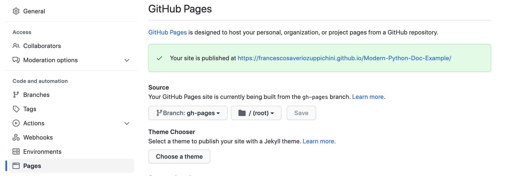

CI/CD
GitHub Action
In order to automatically push your doc on github pages you need to create a new branch called gh-pages
Github Pages Settings
Then head over the Settings in your repo and select the right branch and folder under the pages section. As shown below:

Action permission
Then we need to make sure our actions can write in the repo, go on Settings/Actions/General and under Workflow permissions select Read and write permissions.

Action
The action will be triggered on push to main. You can read more about action customization in the official guide. The action uses the amazing premade github-pages-deploy-action by JamesIves.
Below the code for reference.
name: Doc WorkFlow
on:
push:
branches:
- main
jobs:
build:
runs-on: ubuntu-latest
strategy:
matrix:
python-version: [3.9]
steps:
- name: Checkout 🛎️
uses: actions/checkout@v3
with:
ref: ${{ github.head_ref }}
- name: Set up Python ${{ matrix.python-version }}
uses: actions/setup-python@v2
with:
python-version: ${{ matrix.python-version }}
- name: Install dependencies
run: |
python -m pip install --upgrade pip
pip install -r requirements.txt
- name: Build doc 🔨
run: |
mkdocs build
- name: Deploy 🚀
uses: JamesIves/github-pages-deploy-action@v4.3.3
with:
BRANCH: gh-pages # The branch the action should deploy to.
FOLDER: site # The folder the action should deploy.